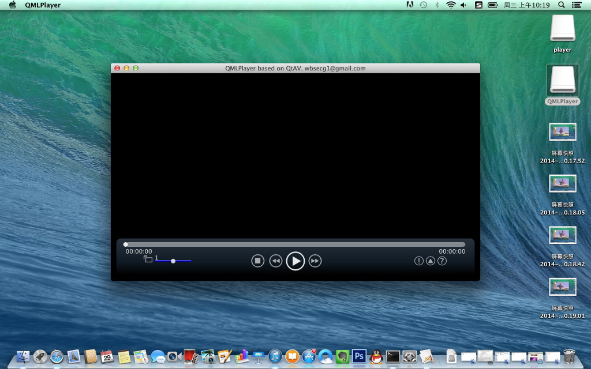
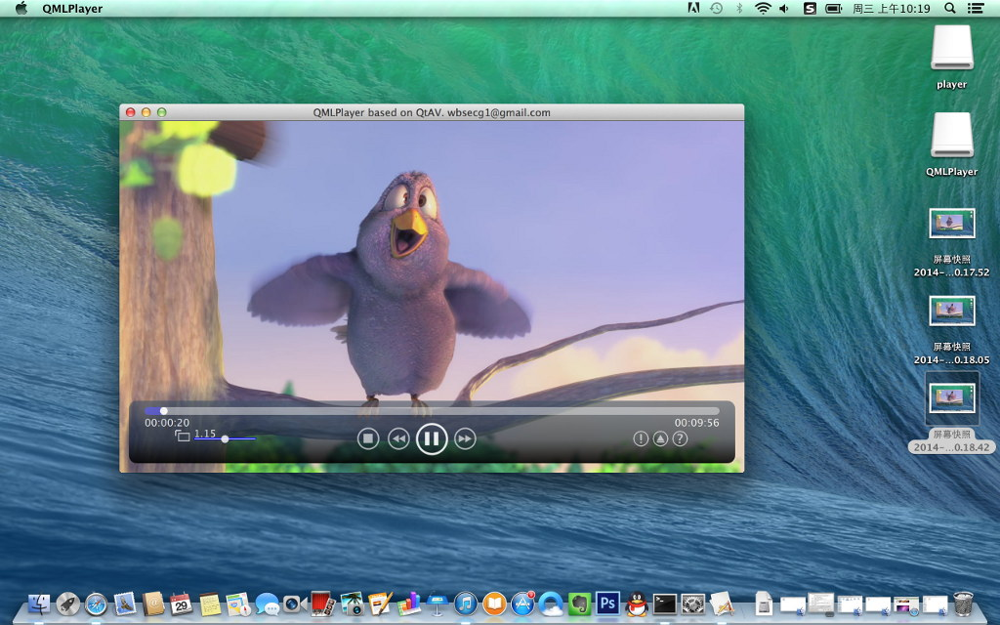
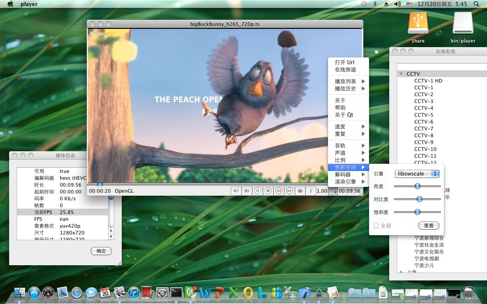
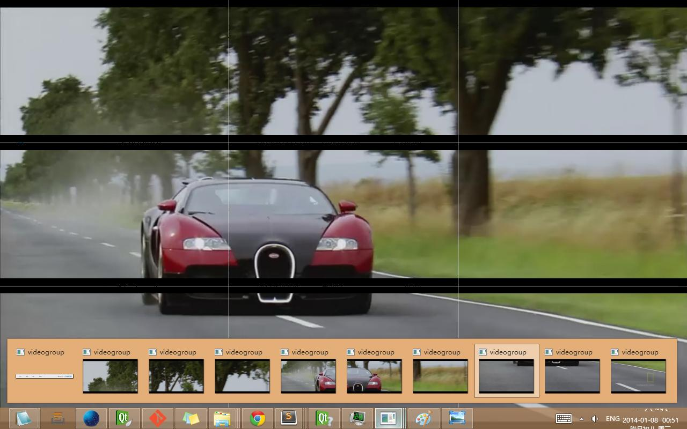
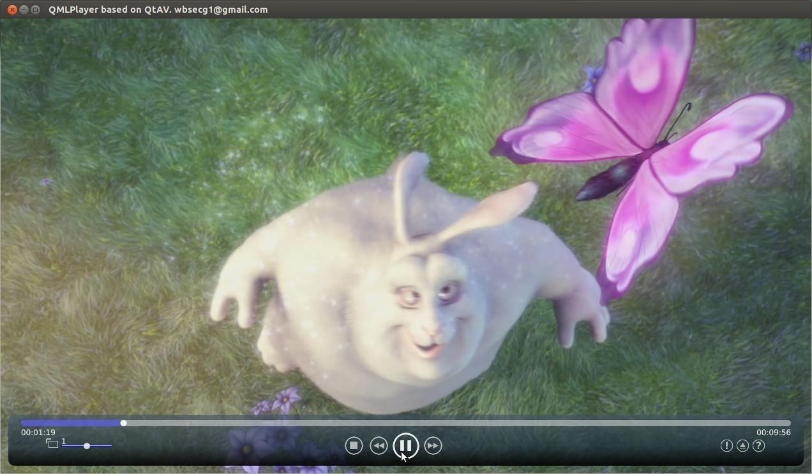
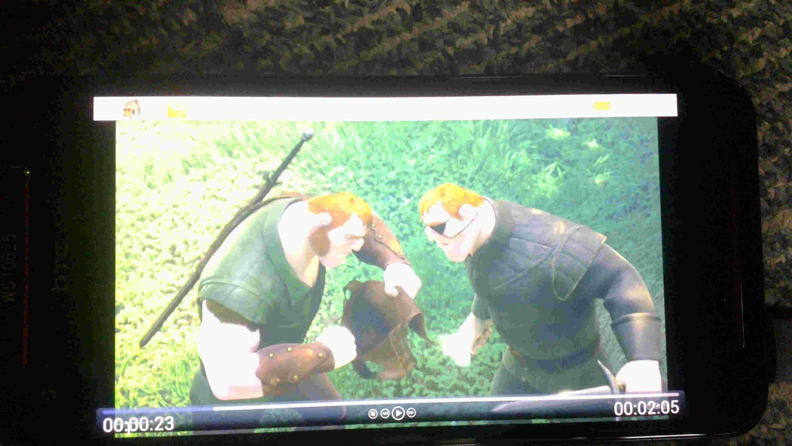
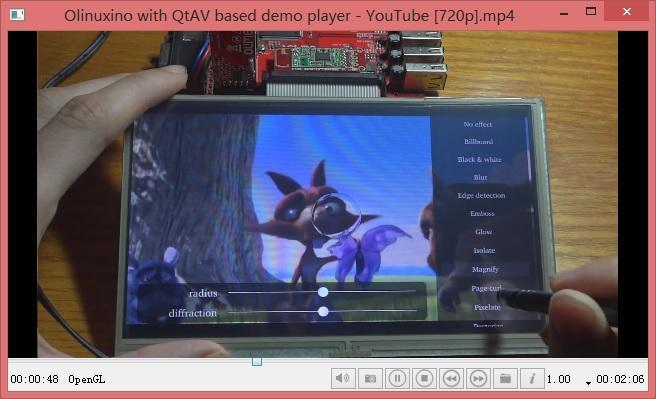
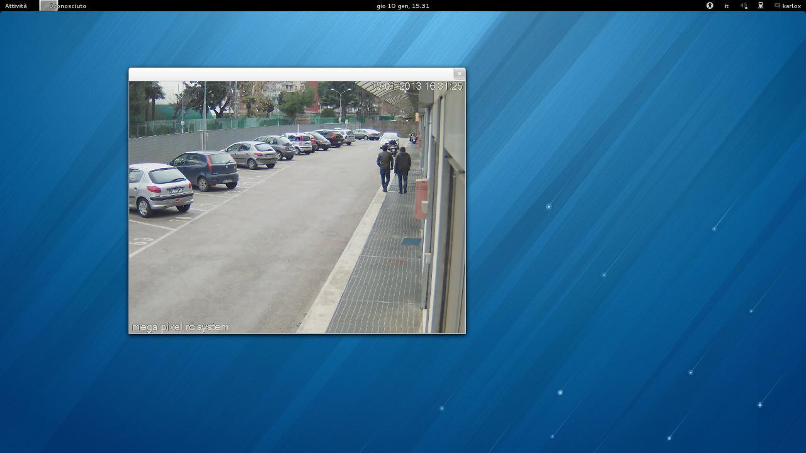

QtAV
A media playing framework based on Qt and FFmpeg. It helps you to write a player easily
基于Qt和FFmpeg的音视频播放框架
Library license: LGPL v2.1 or later. Examples license: GPL v3
Project maintained by wang-bin Hosted on GitHub Pages — Theme by mattgraham
- 
- 
- 
- 
- 
- 
- 
- 
For Developers
Wrtie a media player using QtAV is quite easy. QtAV provide both Qt C++ and QML api. QML playback API is designed to compatible with QtMultiMedia
For more detail to using QtAV, see the wiki Use QtAV In Your Project and examples
Minimal player example
| C++ | QML |
|
|
Features

Platforms
Windows, Linux, Mac OSX, Android, iOS, MeeGo, COSVideo: QtAV based qmlvideofx with CedarV hardware decoding
Donate 资助
-
软件几乎由我一人利用空余学习和工作时间开发。如果您觉得不错，可以考虑资助一下。
- 可用于购买硬件设备使QtAV更好的支持各种硬件，如AMD显卡，pi
- iOS设备的开发环境
-
This software is almost developed by myself. If you find the program useful and would like to support my efforts, please consider donating what you think the program is worth.
Donations are used solely for purchasing hardware to improve and extend QtAV.
- AMD graphics card
- iOS development environment


Copyright © Wang Bin wbsecg1@gmail.com
Shanghai University->S3 Graphics, Shanghai, China
2012~2014